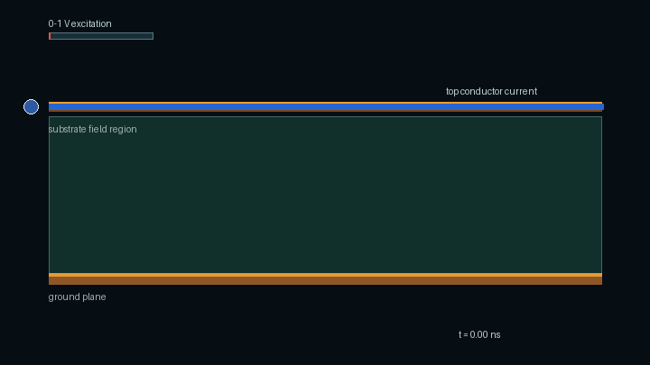
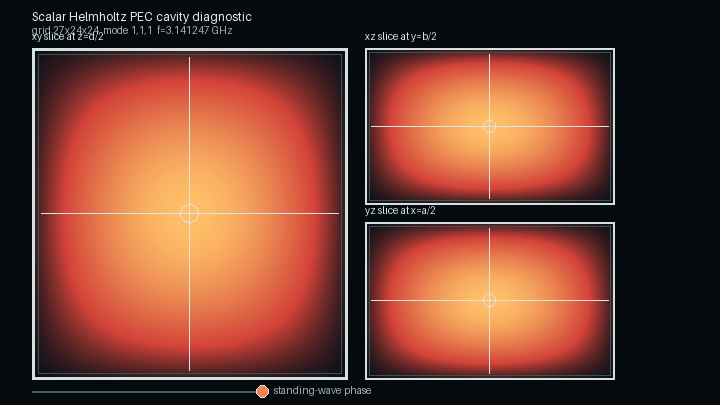
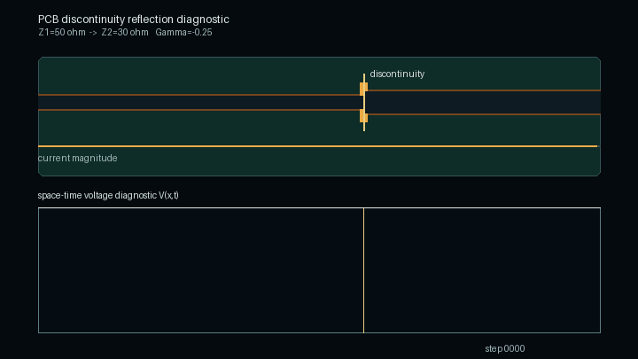
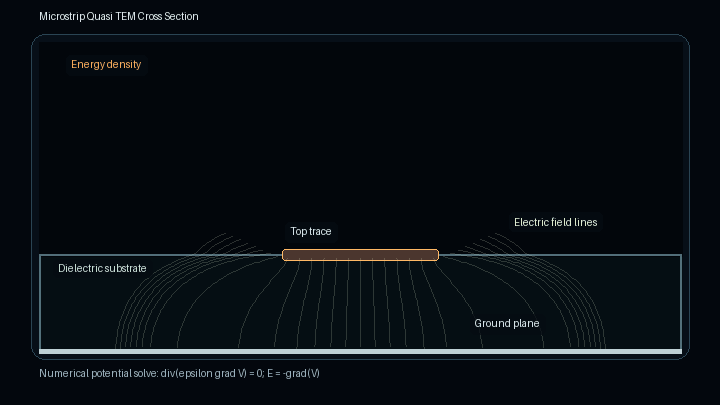
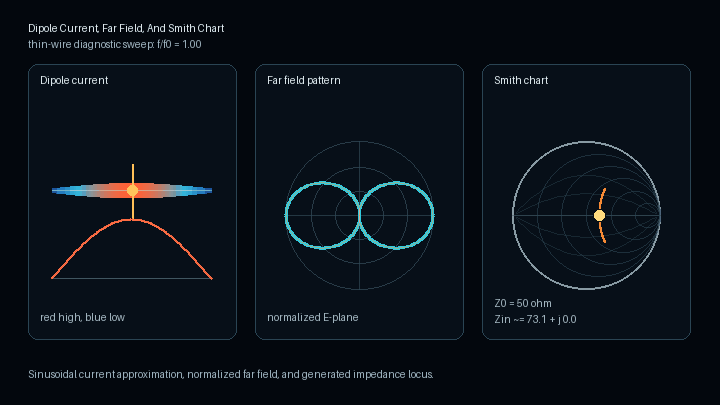

Public showcase and whitepaper material
DAD FieldWorks
Evidence Aware Computational Electromagnetics

Private R&D, Public Boundaries
DAD FieldWorks is a private research and development project. This public repository contains selected architecture notes, current public status, claim boundaries, generated visual assets, and the public whitepaper PDF.
The field animation is a solver generated diagnostic visualization produced from numerical field data.
Public Claim Boundary
- No external validation claim.
- No production readiness claim.
- No commercial solver equivalence claim.
- No private solver source code is released here.
PCB diagnostic visualization
PCB Trace Current And Field Visualization
Solver generated diagnostic visualization of current, field lines, and energy flow in a microstrip-like PCB side view.
The animation is generated from numerical field data and is not validation evidence or a production readiness claim.
View PCB visualization provenance
PEC cavity diagnostic visualization
PEC Cavity Eigenmode Field Slice
Solver generated diagnostic visualization of a scalar Helmholtz rectangular PEC cavity eigenmode with three orthogonal field slices.
The animation shows standing-wave phase evolution from numerical eigenmode field data. It is not validation evidence or a production readiness claim.
View PEC cavity visualization provenance
PCB discontinuity diagnostic
PCB Discontinuity Reflection
Solver generated diagnostic visualization of an incident pulse reflecting and transmitting at a PCB trace impedance step.
The animation is generated from numerical time-domain line data and is not validation evidence or a production readiness claim.
View PCB discontinuity provenance
Microstrip diagnostic
Microstrip Quasi TEM Cross Section
Solver generated diagnostic visualization of electric field lines and energy density in a microstrip-like PCB cross section.
The animation is generated from numerical quasi-static field data and is not validation evidence or a production readiness claim.
View microstrip provenance
Antenna diagnostic
Dipole Current, Far Field, And Smith Chart
Solver generated antenna diagnostic visualization of dipole current distribution, far-field pattern, and impedance locus.
The animation is generated from numerical antenna diagnostic data and is not validation evidence or a production readiness claim.
View dipole diagnostics provenance
Public Materials
Publication Blocker
Final public launch is blocked until legally complete Impressum and Datenschutz pages are supplied and reviewed. No legal contact data is invented in this repository.
Review publication blockers